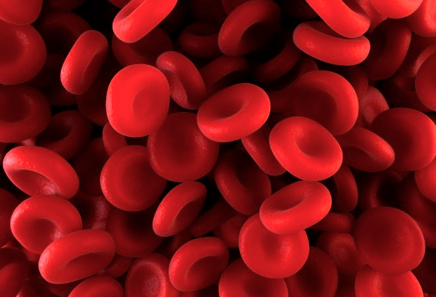
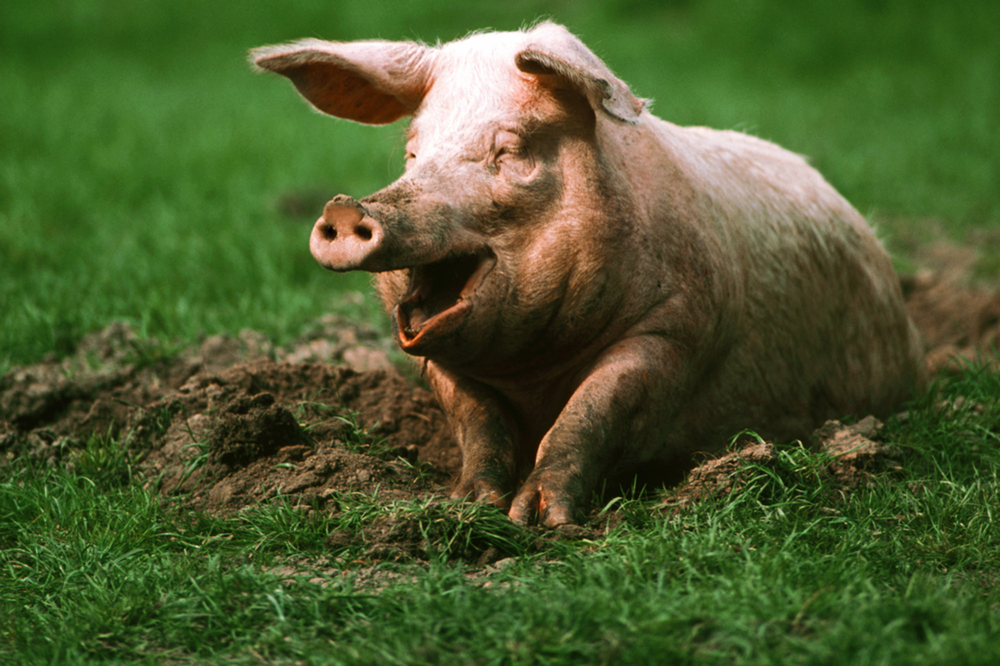
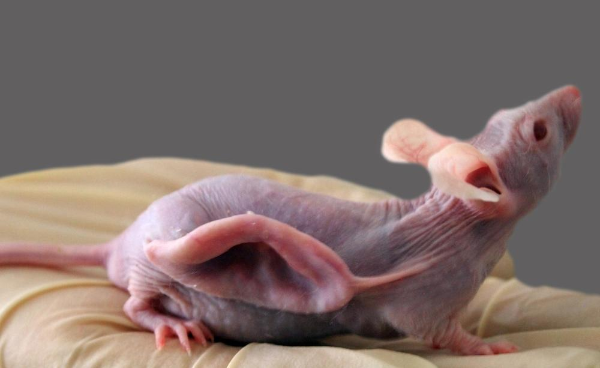
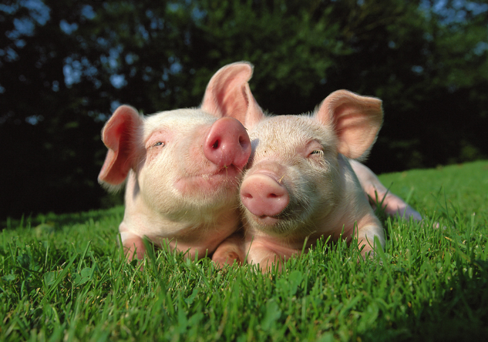
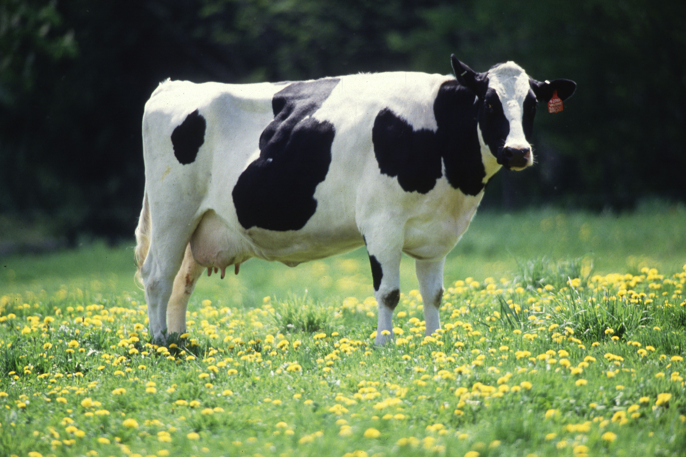
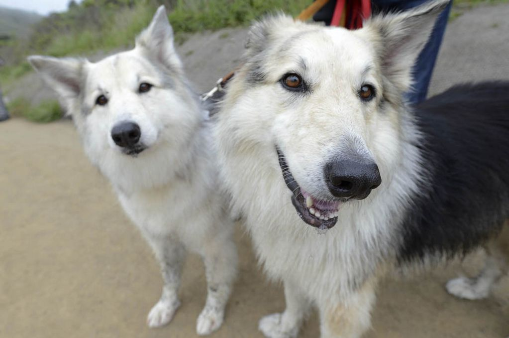

Medical Advancements
There are as many as two-dozen different human and animal drugs developed through transgenics that are in the early and mid stages of development with active Investigational New Drug Applications (INDs) or Investigational New Animal Drug Applications (INADs) on file with the U.S. Food and Drug Administration (FDA). In addition to these advanced programs, there are literally hundreds of transgenic medical protein products that are in pre-clinical development. These drugs and biologics being created by genetically engineered animals can be roughly divided into four broad categories, each of which will be reviewed in greater detail in the sections that follow. These include: 1) blood products, 2) other protein-based drugs, 3) vaccine components and 4) replacement tissue products. Within each of these four categories, some examples of the protein-based medical products that are in development follow.
Blood Products
In February, 2009, the first protein drug from a genetically engineered animal was approved for medical use in the United States. In addition, a number of different proteins derived from the blood of transgenic animals are in various stages of development. In some cases, the uses of genetically engineered animals for bio-manufacturing enables scientists to develop proteins with unique attributes that might offer commercial or therapeutic advantages over compounds made through traditional production sources. The list of products under development is broad. It includes widely used and vital blood products such as clotting factors, antithrombin, and human albumin. The first product approved in the U. S. from a genetically engineered animal is ATryn®, which had been granted orphan drug status by the FDA for the treatment of hereditary antithrombin deficiency, or HD, to prevent excessive bleeding in patients undergoing high-risk surgical procedures or childbirth.
ATryn® was approved by the FDA in February 2009 through both a Biologics License Application and a New Animal Drug Application to be marketed in the United States. ATryn® was previously approved in the European Union for the treatment of HD patients undergoing surgical procedures. Rhucin®, a recombinant human C1 esterase inhibitor produced in the milk of transgenic rabbits is also in clinical trials in Europe. Rhucin® treats acute attacks of hereditary angioedema (HAE), a rare disease characterized by painful swelling of soft tissue.
In some cases, the uses of genetically engineered animals for bio-manufacturing enables scientists to develop proteins with unique attributes that might offer commercial or therapeutic advantages over compounds made through traditional production sources.
While HD is a rather rare disease in its frequency among the population, afflicted patients must receive treatment if they are to have any hope of a normal life. Low levels or inactive forms of the protein antithrombin cause the disease. As a consequence, some patients develop blood clots in their large veins, a medical condition referred to as venous thromboembolism. These blood clots can cause organ damage or even death. Sometimes the clots can form spontaneously, putting an individual at sudden and unexpected risk. Other research suggests that HD can contribute to the loss of a fetus during pregnancy. HD patients are perhaps at greatest risk during events that are independently associated with a probability of thrombosis, such as surgery and delivery.
Genetically engineered animals are also being used for the development of safer and less expensive blood clotting factors for the treatment of hemophilia, with a number of these products also in advanced stages of development. Hemophilia is caused by genetic conditions in which the patients’ failure to express enough coagulation factors may lead to excessive bleeding. Type A hemophilia is due to the lack of factor VIII. Type B hemophilia is due to the lack of factor IX. It is largely inherited. People with the disease are missing some or all of a vital protein needed to form blood clots. In about 30 percent of cases, there is no family history of the disorder and the condition results from a spontaneous gene mutation.
Hemophilia B is far less common than Hemophilia A, occurring in about one in 25,000 male births. It affects about 3,300 individuals in the United States. All races and economic groups are affected equally. A person with hemophilia, when injured, does not bleed harder or faster than a person without hemophilia, one bleeds longer because the blood is slower to clot. Small cuts or surface bruises are usually not a problem, but more traumatic injuries may result in serious problems and potential disability, or even death.

People with severe hemophilia, about 60 percent of patients, have bleeding following an injury and may have frequent spontaneous bleeding episodes, often into the joints and muscles. The preferred treatment is to provide supplemental coagulation factors prophylactically to prevent episodes of excessive bleeding. But the price and availability of recombinant coagulation factors often allows for use in only limited circumstances. When patients are unable to get access to sufficient replacements of these proteins, uncontrolled internal bleeding can cause pain, swelling, and permanent damage to joints and muscles. While the missing blood-clotting protein can be produced in mechanical bioreactors, the cost of this standard treatment runs up to $200,000 per year, per patient. Right now, the only sources of replacement factor IX are the plasma of blood donors (which raises certain safety concerns, including the potential for transmission of disease) and recombinant factor IX produced in Chinese hamster ovary cells (which is expensive and of limited supply). The limited supply and high cost of both the plasma derived and recombinant factor make prophylactic treatment prohibitively expensive.
Scientists have developed genetically engineered animals, including sheep and pigs, able to produce Factor IX, a structurally complex blood clotting protein.
This is another area where genetically engineered animals offer some significant public health opportunities. Scientists have developed genetically engineered animals, including sheep and pigs, able to produce Factor IX, a structurally complex blood clotting protein. The pigs, which are perhaps closest to commercialization, produce the factor in their mammary glands at a productivity level 250-1,000 fold higher than mechanical reactors. The protein can then be extracted from their milk. The high concentration makes the protein easy and inexpensive to purify. Researchers are also using genetically engineered animals in the experimental production of factor VIII, for the treatment of Hemophilia A. Using genetically engineered animals to produce these and other blood factors offers a myriad of potential medical opportunities, not only the prospect of a safer and more renewable source of clotting factors, but also the potential for a lower cost product available for more routine use, perhaps improving the standard of care.
Protein-Based Drugs Researchers have also developed a number of genetically engineered animals capable of producing complex protein-based drugs, often at a lower cost and through perhaps more reliable and safer production means than traditional manufacturing processes. Protein-based drugs differ from protein products synthesized in the blood in that they are produced in vivo by other organs. This technology is even being applied to the development of complex proteins such as monoclonal antibodies as well as many other important human replacement proteins and protein drugs such as polyclonal antibodies, plasminogen activator, human alpha-fetoprotein, alpha-1-proteinase inhibitor, alpha glucosidase and others.
Advanced scientific techniques have been developed to help ensure the purity and safety of these proteins to levels of confidence that in many cases match or exceed traditional production techniques. To take just one example, researchers recently created a line of transgenic swine that produce recombinant human erythropoietin or “epo,” a naturally occurring human hormone that boosts the body’s production of red blood cells. The transgenic swine produced the hormone in their milk through a potentially more efficient and lower cost process than traditional methods employed by the drug’s two main manufacturers. Epo is used commercially in patients with diseased kidneys no longer able to produce the protein, as well as cancer patients being treated with chemotherapy who develop anemia as a consequence of bone marrow depletion from their cancer drug regimens. Erythropoetin-based drugs are some of the most widely used protein-based drugs, and are expensive to manufacture. In advanced preclinical experiments, the amino acid sequence of the swine-produced form of the protein matched that of commercial Epo produced from cultured animal cells. The high yields of the swine-derived protein could offer cost-effective alternatives for clinical applications as well as providing other potential clinical advantages. Recently, transgenic goats have been reported that produce human recombinant butyrylcholinesterase in their milk. The recombinant butyrylcholinesterase is a potential therapeutic agent for delaying the formation of amyloid toxic oligomers in Alzheimer’s disease.

Vaccine Components
Genetically engineered animals are also being used in the manufacture of novel vaccine components. This offers the opportunity for more rapid manufacture of vaccines, perhaps enabling vaccines to be developed in direct and rapid response to viral outbreaks (for example, responding to a pandemic flu). It also offers the opportunity for vaccines to be produced at a lower cost because of the efficiency and high capacity of the transgenic methods. Each animal is, in effect, a product-specific production plant. For these reasons, the application of transgenics to vaccine production has not only public health benefits, but also national security implications.
Our ability to respond effectively to an emerging viral or bacterial threat or a pandemic could be predicated on our ability to quickly scale up manufacturing of a novel vaccine uniquely tailored to an emerging virus or bacteria.
Our ability to respond effectively to an emerging viral or bacterial threat or a pandemic could be predicated on our ability to quickly scale up manufacturing of a novel vaccine uniquely tailored to an emerging virus or bacteria. Genetically engineered animals are uniquely suited to providing that capability. To take just one example of where this technology is being deployed in the production of experimental vaccines, researchers have demonstrated that it may be possible to produce malaria vaccines using genetically engineered animals—at a lower cost than traditional vaccine manufacture methods, and in high volumes. A single goat producing 700 liters/year of milk at the yields researchers obtained experimentally (0.9 g/liter of purified antigen) could supply enough vaccine components called antigens to vaccinate 8.4 million people annually. Thus a herd of three goats could conceivably produce enough antigen to vaccinate 20 million African children per year. Successful development of this potential requires that the antigens produced in the milk of genetically engineered animals retain biological efficacy. For vaccines, as opposed to therapeutic agents, this means that they must retain appropriate immunogenicity. Research has demonstrated that vaccine components produced in genetically engineered animals indeed retain these properties and show evidence of efficacy.
Replacement Tissues
Finally, when it comes to the direct benefits of genetic engineering to human health through improvements in medical care, another frontier of research involves the use of genetically engineered animals to produce human replacement tissues, cells or organs for human transplant. The science of using animal-derived tissues for human transplantation is referred to as xenotransplantation. Pigs have advantages over other animals as a tissue source in this context, as they are easy to breed, have anatomical and physiological characteristics compatible with humans, and are well studied for several pathogens potentially transmissible to humans.

Unlike most non-human primates that are known to carry diseases which are potentially dangerous or even fatal to humans (i.e. HIV and HTLV), caesarean-derived piglets can be maintained free from pathogens that could infect humans, when housed and grown in environmentally controlled facilities with filtered air and water supplies, and by using sterilized plant-based feed which is validated as free from animal proteins. Xenotransplantation presents the opportunity to change completely the transplantation field by providing a vastly expanded supply of human compatible donor tissues. This will enable a solution for overcoming the worldwide organ shortage crisis, a new source for replacement tissues including heart valves, skin and orthopedic tissues.
Hearts and kidneys, when transplanted into non-transgenic primates, can survive as long as six months.
While this field took some time to mature (starting in the early 1990’s), with the advent of nuclear transfer technology, and the successful production of alpha galactosyltransferase knockout (GT-KO) pigs, the critical barrier of organ rejection caused by pre-formed anti-pig (anti-Gal) antibodies was overcome. As a result, in contrast to tissues from normal, unmodified pigs which are rejected in minutes to hours, survival of transgenic GT-KO pig organs, including heart and kidneys, when transplanted into non-transgenic primates, can survive as long as six months. Despite these recent advances, transgenic pig tissues are not yet ready for human clinical testing, but research aimed at further genetic modification of the donor animal, and validation of the technology is progressing rapidly. This approach also holds out promise for more effective treatments for diabetes. Insulin producing pancreatic islet cells from pigs are showing substantial promise, and are likely to be the first live xenograft tissues tested in human clinical trials.
Using protocols similar to those optimized for human islet cell transplantation, pre-clinical studies in monkeys have demonstrated three to six months cure of diabetes. Recent studies using islet cells from pigs transgenic for a human CD complement inhibitor gene are showing even greater efficacy, and may signal the beginning of human trials for treatment of diabetes soon. In relation to whole organ xenografts, because the liver does not require a perfect tissue match and it is relatively resistant to antibody-mediated rejection, the liver is the organ for which there is the greatest chance of near-term success.
The use of transgenic pig livers on a temporary basis (capable of functioning for as little as two weeks to a month), likely will provide opportunities for patients with acute liver failure, when used as a “bridge” to transplant until a human liver can be obtained. Timelines for human trials with bridging transgenic pig livers are similar to those indicated for pig islet transplants. Heart and kidney xenografts are somewhat further off, as they must survive longer without rejection. Due to physiological incompatibilities, heart and kidney xenografts likely will require further genetic modification of the donor pigs, including the addition of other human genes, such as complement inhibitor genes to mop up anti-non-gal antibody reactions, anti-coagulant genes that inhibit blood clots, or genes that have properties that further suppress or modify the human immune rejection response. Further applications for xenotransplantation include providing an unlimited source of corneas for patients with corneal blindness. In vivo studies in nonhuman primates indicate that even wild-type (unmodified) pig corneas remain functional for several months when treated locally with corticosteroids. Recent in vitro experimental evidence using corneas from transgenic GT-KO/CD pigs show considerable resistance to the human immune response. With new genetic modifications being introduced, it is likely that, from an immune perspective, pig corneas will soon be comparable to human corneas. They also appear to be comparable to a human cornea from a biomechanical perspective.
some of these non-transgenic pig-derived products (specifically heart valves and SIS) are subject to galmediated immune responses that result in chronic rejection and premature failure of the devices.
In addition, the potential of pigs as sources of cells that might correct various neurodegenerative conditions is also being explored. For example, there is considerable potential for the transplantation of pig dopamine-producing cells in conditions such as Parkinson’s disease. Preliminary reports indicate significant improvement in motor function in monkeys in which a Parkinson-like condition has been induced, and in which cells from the ventral mesencephalon of pig embryos have been implanted. The number of patients who would benefit from this form of therapy is clearly considerable.
Similar to the large unmet need for viable human-compatible cells and organs, due to the same supply constraints, processed tissues obtained from donated human cadavers, and used to make more than a hundred different types of human-derived tissue products, are also in limited supply. As a result, processed tissues including heart valves, skin, surgical mesh (derived from small intestine submucosa or SIS), and orthopedic tissues (including bone and tendons), are currently obtained from pigs and used for human therapeutic applications. The FDA regulates these tissues as medical devices, and although they have shown efficacy in their human therapeutic applications, recently it has been demonstrated that some of these non-transgenic pig-derived products (specifically heart valves and SIS) are subject to galmediated immune responses that result in chronic rejection and premature failure of the devices. The advent of transgenic Gal-free (GT-KO) pigs promises improved outcomes for like devices. Because these fall under the medical device regulatory umbrella (unlike live cell/organ xenotransplantation tissues), they provide near-term opportunities (possibly less than 3 years for those tissue devices that would follow a specific regulatory approval path) for commercial products derived from genetically engineered pigs. These products bring the promise of scale, safety, and improved efficacy for these tissue markets.
Despite the recent technology advances in this field, it is true that xenotransplantation still faces both technical and regulatory hurdles, as well as some criticism. But much of it is strongly reminiscent of the criticism leveled against human-to-human transplantation during the late 1960s and early 1970s. Yet with persistence, the field of human-to-human transplantation has proved highly successful. This success was the result of a stepwise increase in our understanding of the biology of rejection, improvements in immune suppression drug management, and experience. Likewise, with respect to xenotransplantation, especially for whole organ pig xenografts like heart and kidney, where it’s likely that xenotransplantation may not be universally successful until further technologic advances occur. However, exciting pre-clinical advances in cellular transplantation for treatment of diabetes, as well as for treatment of acute liver failure, either using transgenic (ie. GT-KO) pig livers as a temporary bridge to transplant, or purified pig liver cells in bioartificial liver devices, present opportunities that could be achievable. Also, the application of genetically engineered animals for producing medical device products is generating significant interest from orthopedic and pharmaceutical companies and is likely to take the lead in forging the path to commercialization of safe and efficacious xenograft tissue products.

Food, Environment and Animal Welfare
There are numerous potential applications of genetic engineering of agricultural animals to develop new or altered strains of agriculturally important livestock. The future benefits of these applications are consistently as compelling as those for the biomedical applications, as they both promise to advance public health. In addition, owing to the global role of animal food products, genetic engineering promises to improve food security, production, quality and safety, while reducing the environmental footprint of livestock agriculture. In addition, the technology promises to improve animal welfare. Enhanced Nutrition and Public Health Human health is directly impacted in large part by the requirement for a sustainable and secure supply of healthful food. Genetic engineering of agricultural animals has the potential to provide compelling consumer benefits to public health via enhanced nutrition. For over 10,000 years, farmers and ranchers have improved the genetics of livestock and poultry to provide for nutritious, safe and economical animal protein products. It is a well-known fact that as socio-economic status of global communities rise, consumers demand more dietary animal protein as meat and milk, and that health and cognitive skills of children improve. It can be argued that the only technology that will allow such improvements in diet and health will be genetic engineering of livestock and poultry that is sustainable and available consistently worldwide. Genetic engineering holds the promise to improve nutritional attributes of animal food products including their quantity, the quality of the whole food and specific nutritional composition. For example, increasing lean meat may be achieved by using genetic engineering to impact growth modulators, such as growth hormone and insulin-like growth factor. Another strategy is to introduce or regulate genes that mediate the formation of muscle tissue. In addition, introducing or altering proteins regulating lipid metabolism such as the hormone leptin or the enzyme fatty acid synthase could accomplish improvement in the percentage of lean meat to fat in whole foods.
A new and promising area of genetic engineering is the development of livestock with modified lipid profiles, or “heart healthy” fatty acids.
A new and promising area of genetic engineering is the development of livestock with modified lipid profiles, or “heart-healthy” fatty acids. This could be extended to other meat and milk producing species to improve and extend the health benefits of altering lipid composition to a wide variety of animal products. All of these potential interventions could result in more nutritious and healthful animal products used for food. Implications for public health through amelioration of pathologies (i.e. cardiovascular and cerebrovascular disease, cancer, diabetes, and obesity) associated with poor diet (high fat, low quality protein) could be monumental. The production of lower fat, more nutritious foodstuffs from meat and milk produced by genetic engineering could enable these potential improvements to public health.
Food borne diseases are a major global contributor to human morbidity/mortality, and genetically engineered animals can help manage and mitigate the causes in many ways. The public health benefits of improving food safety, via a more wholesome food supply, include production of genetically engineered animals that have inherent resistance to food borne pathogens. Early research has included development of poultry and livestock resistant to such organisms as E. coli, campylobacter, clostridium and streptococcus. Other genetic engineering could eliminate the animal’s susceptibility to diseases, zoonotic and other, and their threat to human health, such as bovine spongiform encephalopathy or “mad cow disease” or mastitis, an inflammation of the mammary gland that reduces milk quality. Improving animal health via genetic engineering also provides the added benefit of reducing the need for veterinary interventions and use of antibiotics and other medicinal treatments. The implications for public health through improving animal welfare, and increasing the animal’s disease resistance are significant. Practical applications of genetic engineering in livestock production include improved milk production and composition, increased growth rate, improved feed utilization, improved carcass composition, enhanced reproductive performance, increased prolificacy and altered cell and tissue characteristics for biomedical research and manufacturing. The production of swine with a growth hormone transgene serves as an excellent example of the value of this technology.
Improvement of milk composition through genetic engineering has the potential to enhance the production of certain proteins and/or growth factors deficient in milk. The improvement of the nutrient or therapeutic value of milk may have a profound impact on survival and growth of newborns in both humans and animals. Other animal products, such as eggs and meat could also benefit from the use of genetic engineering. Genes could be targeted that could increase egg production in chickens and postpone reproductive senescence not only in chicken but also in other species as a result of physiologic events such as lactation, anorexia, poor nutrition and season of the year.
Reduced Environmental Impact
Livestock agriculture has been targeted by some as being harmful to the environment. However, genetic engineering of agricultural animals has the potential to significantly reduce its environmental footprint. Genetic engineering of animals could make a significant impact on protecting and improving the environment, such as decreasing phosphorous and nitrogen pollution in the Chesapeake Bay watershed or in the aquifers in hog and poultry producing areas such as Minnesota, North Carolina and Arkansas.

Increasing efficiency and productivity per animal through genetic engineering will lead to a decreased burden on limited land and water resources while protecting the environment by decreasing potential pollutants from entering the soil and ground water. The protection of watersheds and ground water will become an ever more pressing issue regarding human health as populations continue to grow and expand into rural environments. Ample research and development has ensued for swine (the Enviro-Pig™) produced by genetic engineering that has the ability to reduce the amount of phosphorous excreted into the environment. Increased rate of production of milk or meat will also decrease the impact on the environment by decreasing 1) the amount of manure, 2) the direct competition for human food, 3) the water requirement both for the animals and for facility hygiene and 4) the land footprint required for livestock facilities. Also improving feed conversion efficiency, reducing the pounds of feed required to produce a pound of meat or milk, could significantly reduce the environmental footprint of feedlot operations. Reducing feed inputs reduces manure outputs per unit of food produced. The AquAdvantage™ salmon produced by genetic engineering halves the time to market, improves feed efficiency and will contribute to a major reduction in the environmental footprint of aquaculture while producing a safe, healthy food.
Improved Animal Welfare
Genetic engineering of agricultural animals will improve animal welfare by producing healthier animals.
Genetic engineering of agricultural animals will improve animal welfare by producing healthier animals. Animal welfare is the top priority of anyone involved in animal husbandry and stewardship of the production of livestock. Therefore, because the technology can specifically impart resistance to a number of diseases, and improve productive characteristics, genetic engineering stands to significantly impact the health and well being of livestock. The end result of the improved health and well being from genetic engineering is to reduce frequency of veterinary interventions and use of various dietary and metabolic supplements, which have become commonly used in livestock production. Due to the outlook for significant benefits there is ample global research and private development of genetically engineered animals that improve foods, are environmentally friendly, improve animal welfare and produce industrial products. It appears that the first food application with the U.S. FDA for genetic engineering is to enhance the growth rate of commercially valuable fish such as Atlantic salmon. Other food applications are also underway. Genetic engineering may improve several aspects of livestock production including 1) milk quality, 2) meat production as growth and carcass composition, 3) animal welfare (via disease resistance), 4) reproductive performance and 5) quality of hair and fiber.
Enhancing Milk
Advances in recombinant DNA technology have provided the opportunity either to improve the composition of milk or to produce entirely novel proteins in milk. These changes may add value to, as well as increase, the potential uses of milk. The improvement of livestock growth or survivability through the modification of milk composition requires production of genetically engineered animals that: 1) produce a greater quantity of milk, 2) produce milk of higher nutrient content or 3) produce milk that contains a beneficial “nutriceutical” protein. The major nutrients in milk are protein, fat and lactose. By elevating any of these components, we can improve growth and health of the developing offspring that consumer the enhanced milk. In many production species such as cattle, sheep and goats, the nutrients available to the young may not be limiting. However, milk production in the sow limits piglet growth and therefore pig production. Methods that increase the growth of piglets during suckling result in increased weaning weights, decreased time to reach market weight and thus decreased feed requirements for the pig. Cattle, sheep and goats used for meat production may also benefit from improved milk yield or composition. In tropical climates, Bos indicus cattle breeds do not produce copious quantities of milk. Increases in milk yield of as little as 2-4 liters per day may have a profound effect on weaning weights in cattle such as the Nelore breed in Brazil. Similar comparisons can be made with improving weaning weights in meat type breeds like the Texel sheep and Boer goat. This application of genetic engineering could lead to improved growth and survival of offspring.

A second mechanism by which changing milk composition may improve animal growth is the addition or supplementation of beneficial naturally occurring hormones, growth factors or bioactive factors to the milk through the use of genetic engineering. It has been suggested that bioactive substances in milk possess important functions in the neonate with regard to regulation of growth, development and maturation of the gut, immune system and endocrine organs. Transgenic alteration of milk composition has the potential to enhance the production of certain proteins and/or growth factors that are deficient in milk. The increased expression of a number of these proteins in milk may improve growth, development, health and survivability of the developing offspring. Some of these factors are insulin-like growth factor (IGF-I), epidermal growth factor (EGF), transforming growth factor beta (TGF- ) and lactoferrin. Other properties of milk that bear consideration for modifications are those that affect human and animal health.
It has been shown that specific antibodies can be produced in genetically engineered animals.
It has been shown that specific antibodies can be produced in genetically engineered animals. It should be possible to produce antibodies in the mammary gland that are capable of preventing mastitis in cattle, sheep and goats and MMA (mastitis-metritisagalactia) in pigs, and/or antibodies that aid in the prevention of domestic animal or human diseases. Another example is to increase proteins that have physiological roles within the mammary gland itself such as -lactalbumin, lysozyme, lysostaphin or other antimicrobial peptides. It is important to consider the use of transgenics to increase specific components, which are already present in milk for manufacturing purposes. An example might be to increase one of the casein components in milk. This could increase the value of milk in manufacturing processes such as production of cheese or yogurt. One might also alter the physical properties of a protein such as -casein or -casein. By increasing the glycosylation of -casein, one could increase its solubility in milk, which would reduce the time required for rennet coagulation and whey expulsion. This would produce firmer curds that are valuable in cheese making. Changes in other physical properties could result in dairy foods with improved characteristics, such as better tasting low fat cheese. It should also be possible to increase the concentration of milk components while maintaining a constant volume. This could lead to greater product yield (i.e. more protein, fat or carbohydrate from a liter of milk).
This would also aid in manufacturing processes while also decreasing transportation costs for the more concentrated products in fluid milk. The end result would be more saleable product for the dairy producer and a reduced environmental footprint. The overall result of genetic engineering to modify milk will be the creation of more uses of milk and milk products in both agriculture and medicine. This is truly a “value-added” opportunity for animal agriculture by increasing the concentrations of existing proteins or producing entirely new proteins in milk.
Enhancing Growth Rates and Carcass Composition
The production of genetically engineered livestock has been instrumental in providing new insights into the mechanisms of gene action governing growth. Using transgenic technology, it is possible to manipulate growth factors, growth factor receptors and growth modulators. Transgenic sheep and pigs have been used to examine postnatal growth of mammals. Growth hormone (GH) and IGF genes have been incorporated and expressed at various levels in genetically engineered animals. Transgenic livestock and fish have been produced which contain an exogenous GH gene. This type of work enabled the study of chronic expression of these hormones on growth in mammals and fish. Results from one study have shown that an increase in porcine-produced GH as a result of a transgene leads to enhanced growth and feed efficiency in pigs. In fish, dramatic increases have been shown in growth rate of transgenic Atlantic salmon using the gene promoter and growth hormone gene derived from fish species. These researchers also indicate that fish used in aquaculture would be made sterile, thus minimizing the ecological impact due to accidental escape of fish that might be raised in ocean pens. Introduction of salmonid GH constructs has resulted in a 5-11 fold increase in weight after one year of growth. This demonstrates that increased growth rate and ultimately increased rate of protein production can be achieved via genetic engineering. In addition, the production of these growth-enhanced salmon will have vast positive environmental benefits. Cutting in half the time required to raise salmon means supply can be increased without proportionately increasing the use of farms. In addition, land-based systems become economically viable and competitive with ocean-pen systems further reducing environmental impact. The apparent increase in food conversion rates means that fewer natural resources are required to produce the fish, thus enhancing sustainability.
Certainly, there are numerous potential genes related to growth, including growth factors, receptors or modulators which have not yet been used, but may be of practical importance in producing genetically engineered livestock with increased growth rates and/or feed efficiencies.
The Rendement Napole (RN) or acid-meat gene has been implicated in lower processing yields in lines of Hampshire and Hampshire crossbred pigs. “Knocking-out” the RN gene may provide a method to alter post-mortem pH and thereby increase meat tenderness. Other specific loci, which may affect growth patterns, are the ryanodine receptor, the myo-D, GH releasing factor, high affinity IGF binding proteins (IGFBP-1 to IGFBP-6), the sheep callipyge and the myostatin (growth/differentiation factor-8, GDF-8) genes. Based on a recent report on the mouse, the myostatin gene is an exceptionally intriguing potential locus for “knocking-out” in meat producing species. The loss of the myostatin protein results in an increase in lean muscle mass. Certainly, there are numerous potential genes related to growth, including growth factors, receptors or modulators which have not yet been used, but may be of practical importance in producing genetically engineered livestock with increased growth rates and/or feed efficiencies.
Altering the fat or cholesterol composition of the carcass is another valuable benefit that can be delivered via genetic engineering. By changing the metabolism or uptake of cholesterol and/or fatty acids, the content of fat and cholesterol of meats, eggs and cheeses could be lowered. There is also the possibility of introducing beneficial fats such as the omega-3 fatty acids from fish or other animals into our livestock. Receptors such as the low-density lipoprotein (LDL) receptor gene and hormones like leptin are also potential targets that would decrease fat and cholesterol in animal products.
The use of genetic engineering to improve feed efficiency and/or appetite could profoundly impact livestock production and deliver significant benefits to producers, processors, and consumers. Increased uptake of nutrients in the digestive tract, by alteration of the enzyme profiles in the gut, could increase feed efficiency. The ability to introduce enzymes such as phytase or xylanase into the gut of species where they are not normally present, such as swine or poultry, is particularly attractive. The introduction of phytase would increase the bioavailability of phosphorus from phytic acid in corn and soy products. One group has reported the production of transgenic pigs expressing salivary phytase as early as seven days of age. The salivary phytase provided essentially complete digestion of the dietary phytate phosphorus in addition to reducing phosphorus output in waste by up to 75 percent. Furthermore, transgenic pigs required almost no inorganic phosphorus supplementation to the diet to achieve normal growth. The use of phytase transgenic pigs in commercial pork production could result in significantly decreased environmental phosphorus pollution from livestock operations.
Enhanced Animal Welfare through Improved Disease Resistance
The impact of genetic engineering on animal welfare is compelling. Genetic engineering of agricultural animals has the potential to improve disease resistance by introducing specific genes into livestock. Identification of single genes in the major histocompatibility complex (MHC), which influence the immune response, was instrumental in the recognition of the genetic basis of disease resistance/susceptibility. The application of transgenic technology to specific aspects of the immune system should provide opportunities to genetically engineer livestock that are healthier and have superior disease resistance.
Many aspects of disease resistance or susceptibility in livestock that are genetically determined. One specific example where transgenesis has been applied to disease resistance in livestock is the attempt to produce cattle resistant to mastitis. Mastitis is an infectious disease of the mammary gland that causes decreased milk production and lost productivity. Treatment and prevention of mastitis is costly and labor intensive. Lysostaphin is an antimicrobial peptide that protects mammary glands against Staphylococcus aureus infection by killing the bacteria in a dose-dependent manner. Transgenic dairy cows that secrete lysostaphin into their milk have been produced to address the mastitis issue.
The application of nuclear transfer technology, or cloning, will enable the augmentation of beneficial alleles and/or the removal (via gene “knock-out”) of undesirable alleles associated with disease resistance or susceptibility. An example is “knocking-out” the intestinal receptor for the K88 antigen. The absence of this antigen has been shown to confer resistance to infection of K88-positive E. coli. Potential areas of investigation include resistance to: 1) parasitic organisms such as trypanosomes and nematodes; 2) viral or bacterial pathogens such as bovine leukemia virus, pseudorabies virus, foot and mouth virus, clostridium and streptococcus and 3) genetic diseases such as deficiency of uridine monophosphate synthase (DUMPS), mule foot and bovine leukocyte adhesion deficiency (BLAD).

The opportunity to produce animals that could self-immunize against pathogens is an exciting application of genetic engineering. Transgenes could be designed to produce antigens resulting in immunization of the genetically engineered animal to particular diseases. Transgenes will be designed that could be turned on by administering, for example, zinc in feed, or a specific antibiotic to produce antigens that could raise protective antibody titers.
Using the genetics from naturally resistant animals in cloning applications will produce animals resistant to a variety of diseases including bovine spongiform encephalopathy (BSE) and scrapie. An example of this kind of application is the production of transgenic mice expressing either the human or bovine prion protein. Each of these mouse strains was inoculated with the prions that cause BSE or with a variant of Creutzfeldt-Jakob disease (vCJD). The BSE was transmitted to the mice containing the bovine prion protein but was not transmitted to transgenic mice containing the human prion protein. However, all three transgenic mouse lines containing the human prion protein showed transmission of the disease when inoculated with vCJD. Recently, cattle have been produced lacking the prion protein. Analysis of these animals determined that they are in fact resistant to BSE, and this is a major step toward developing cattle that do not develop “mad-cow” disease. Another example of this potential application is the production of fetuses that are resistant to brucellosis, a highly contagious bacterial disease of cattle that can be transmitted from cattle to humans and causes high fever and muscular pain. This is only a partial list of organisms or genetic diseases that, when targeted for improvement via transgenic methodologies, will increase production efficiency and enhance animal welfare.
Improving Reproductive Performance and Fecundity
Several genes have been identified which may profoundly affect reproductive performance. These include the estrogen receptor (ESR) and the Boroola fecundity (FECB) genes. It has been shown that a specific form of the ESR gene is associated with 1.4 more pigs born per litter than is typical in lines of pigs that do not contain this specific ESR gene type. Introduction of a mutated or polymorphic ESR gene could increase litter size in a number of diverse breeds of pigs. A single major gene for fecundity, the FECB gene, which allows for increased ovulation rate, has been identified in Merino sheep. Each copy of the gene has been shown to increase ovulation rate by approximately 1.5 ova per cycle. Production of transgenic sheep containing the appropriate FECB allele could increase fecundity in a number of diverse breeds. Identification of additional genes involved in fecundity from hyperprolific breeds/strains of swine (Meishan), sheep (Finnish Landrace) and cattle (high twinning) will provide additional opportunities to improve reproductive performance. The manipulation of reproductive processes using transgenic methodologies is only beginning, and it should be a very rich area for research and livestock improvement in the future.
Improving Hair and Fiber
The control of the quality, color, yield and ease of harvest of hair, wool and fiber for fabric and yarn production has been an area of focus for genetic engineering in livestock.
The control of the quality, color, yield and ease of harvest of hair, wool and fiber for fabric and yarn production has been an area of focus for genetic engineering in livestock. The manipulation of the quality, length, fineness and crimp of the wool and hair fiber from sheep and goats has been examined using transgenic methods. Transgenic methods will also allow improvements to fiber elasticity and strength. In the future transgenic manipulation of wool will focus on the surface of the fibers. Decreasing the surface interactions between fibers could decrease shrinkage of garments made from such fibers.
A novel approach to produce useful fiber has been recently accomplished using the milk of transgenic goats. Spiders that produce orb-webs synthesize as many as seven different types of silk used in making these webs. Each of these silks has specific mechanical properties that make them distinct from other synthetic and natural fibers. One of the most durable varieties is dragline silk. This material can be elongated up to 35 percent and has tensile properties close to those of the synthetic fiber Kevlar®. This silk has a greater capacity to absorb energy before snapping than steel. The protein monomers that assemble to produce these spider silk fibers have been produced in the milk of transgenic goats. The numerous potential applications of these fibers include medical devices, suture, ballistic protection, aircraft, automotive composites and clothing to name a few.